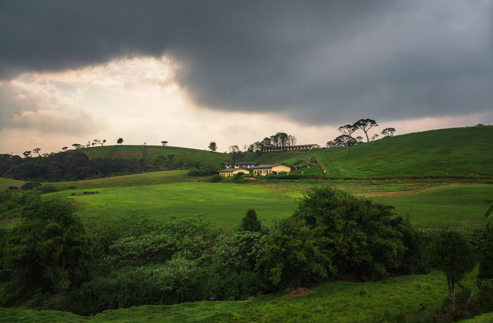
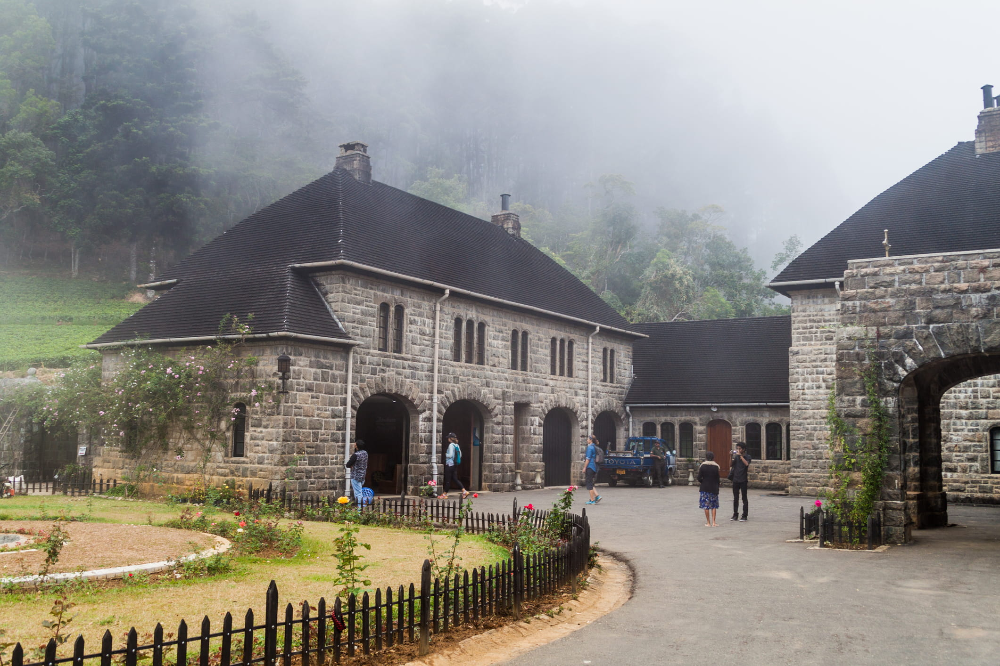
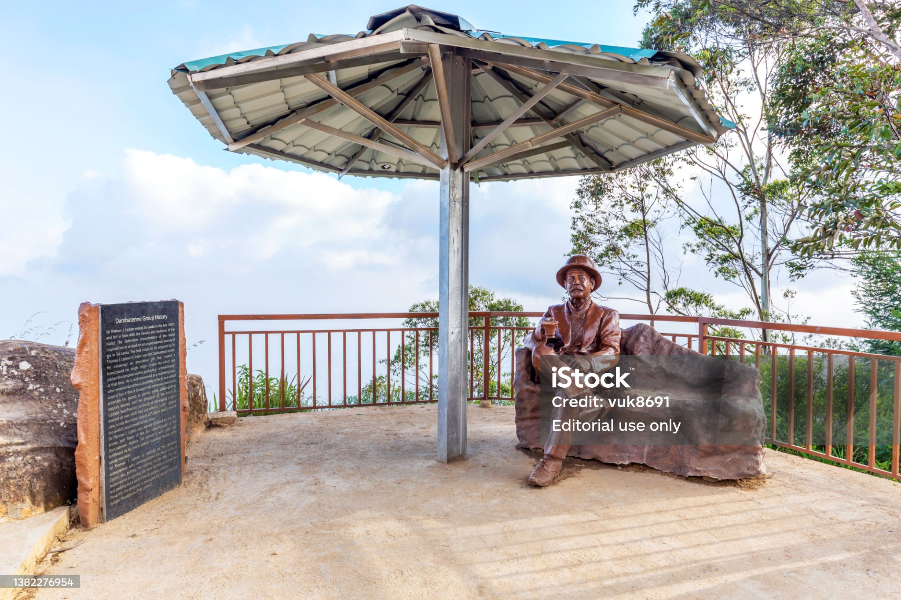

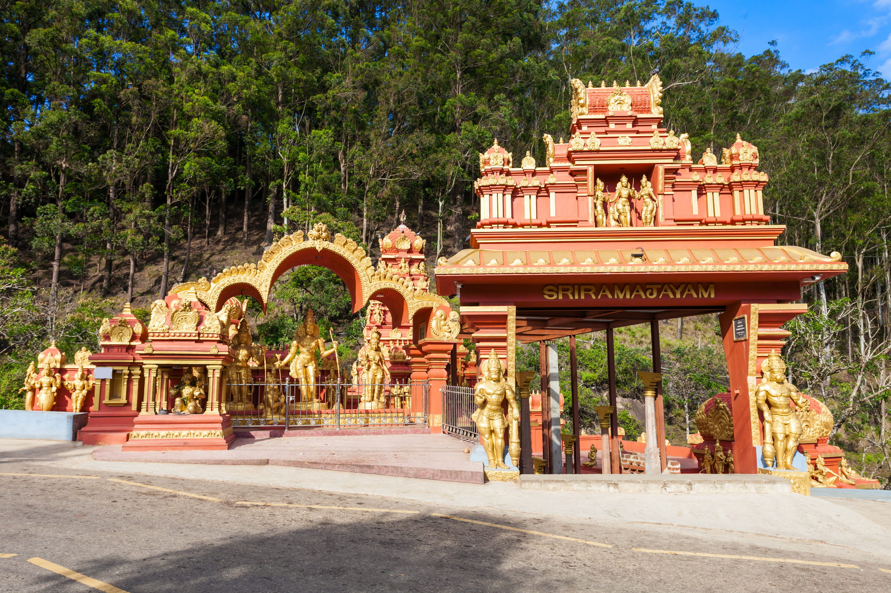
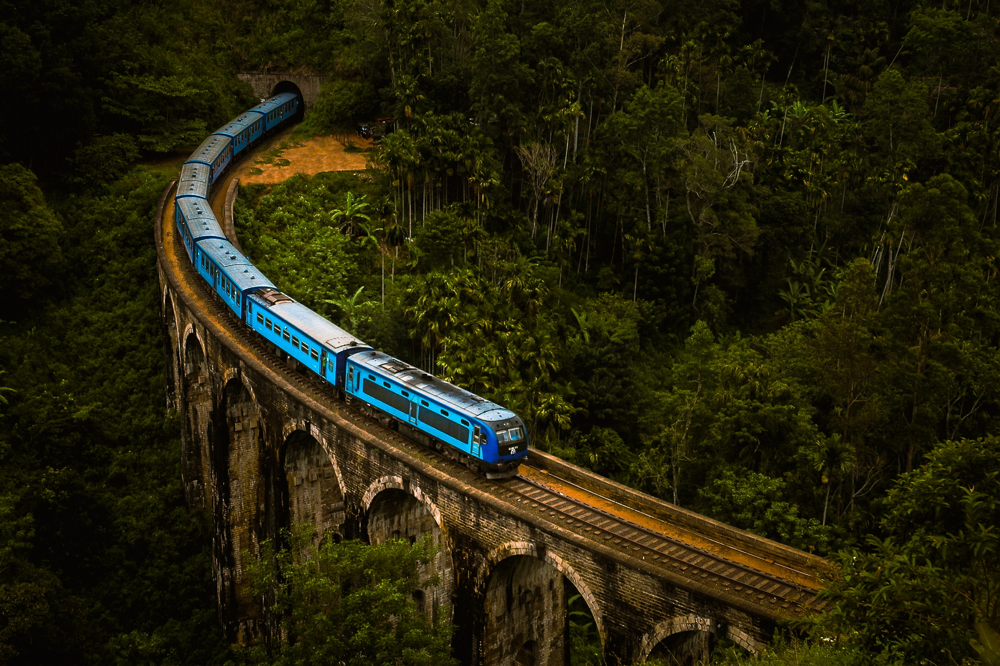
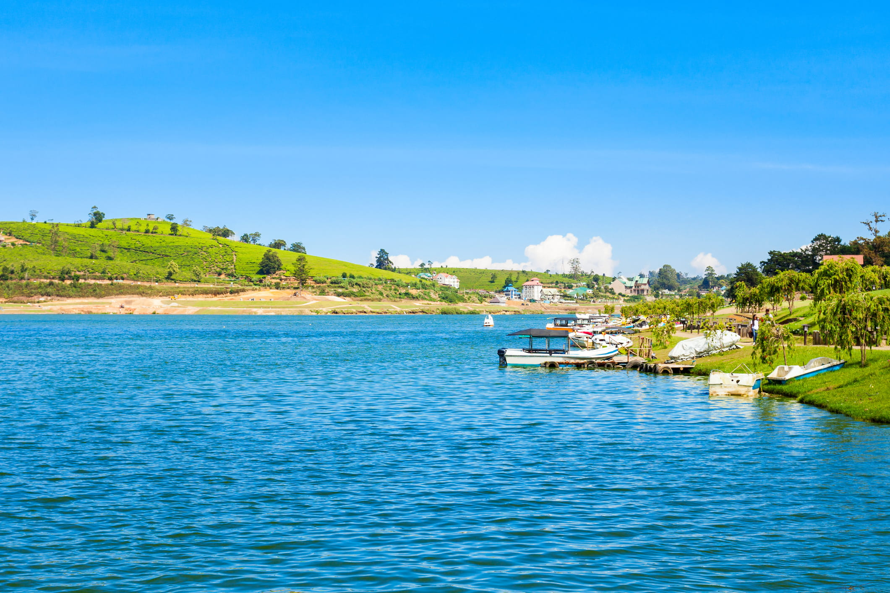
Tour Details
Overview
Peak Explorer Sightseeing package takes you from an Udawalawe elephant safari to the iconic Nine Arch Bridge and Ravana Falls in Ella. You'll discover breathtaking views from Lipton's Seat, explore the misty Horton Plains, and visit the serene Adisham Bungalow. The tour also covers Nuwara Eliya's highlights like Gregory Lake and Hakgala Gardens, before concluding at the powerful Laxapana Falls.
Udawalawe National Park Safari
As a premier wildlife sanctuary, Udawalawe National Park is Sri Lanka's most reliable destination for observing large herds of wild Asian elephants in their natural grassland habitat surrounding a vast reservoir.
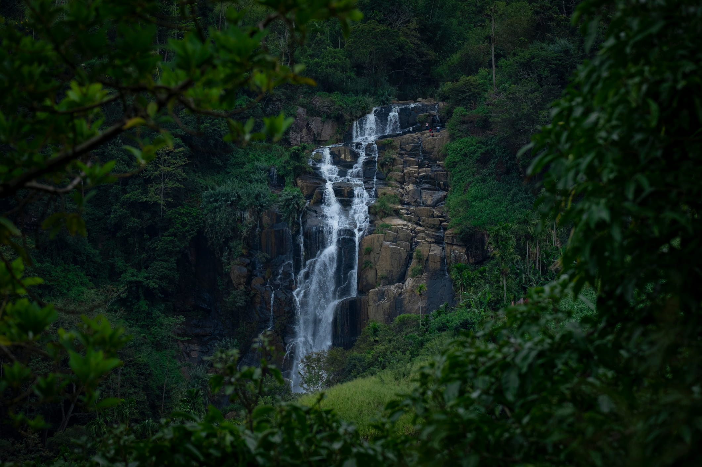
Kitalella water fall
Kithal Ella is a beautiful waterfall located near the popular town of Ella in Sri Lanka.
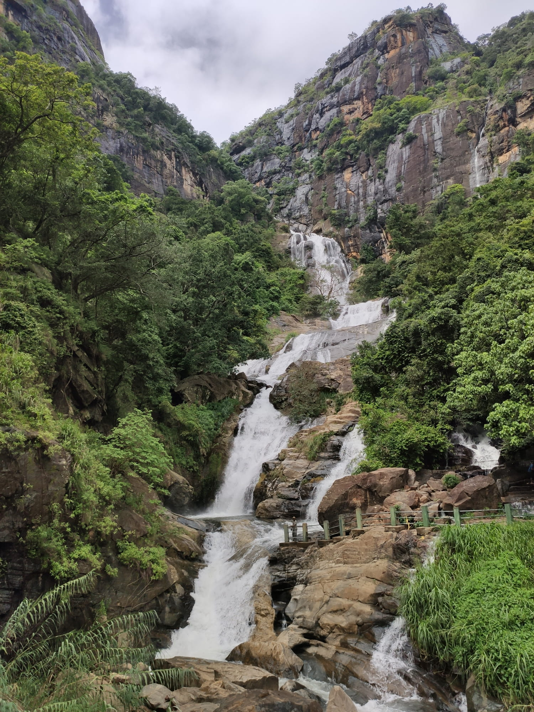
Rawana Falls
Ravana Falls is one of Sri Lanka's most iconic waterfalls, located in Ella and famously linked to the legend of King Ravana and Sita from the Ramayana.
Nine Arch Bridge
The Nine Arch Bridge is a stunning colonial-era viaduct near Ella, celebrated for the iconic sight of the train passing over its picturesque arches amidst lush tea plantations.
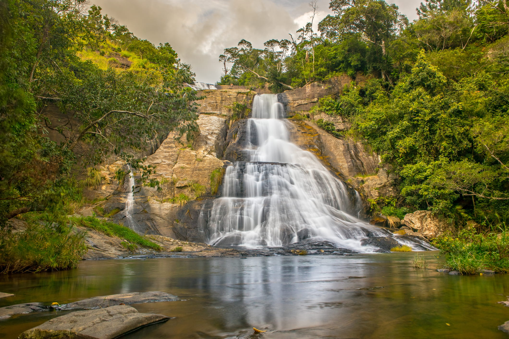
Diyaluma Water Falls
Diyaluma Falls is Sri Lanka's second-highest waterfall, famous for the stunning natural infinity pools at its summit which offer breathtaking views over the highlands.
Adisham bunglow
Adisham Hall is a magnificent Tudor-style country house near Haputale that now functions as a Benedictine monastery, well-known for its beautiful gardens and locally produced fruit jams.
Lipton Seat
Lipton's Seat is a famous viewpoint near Haputale, named after the Scottish tea magnate Sir Thomas Lipton, offering breathtaking panoramic views over his former sprawling tea estates.
Gregory Lake
Gregory Lake is a picturesque, man-made reservoir from the British colonial era, now serving as the recreational heart of Nuwara Eliya with popular activities like boating and horse riding.
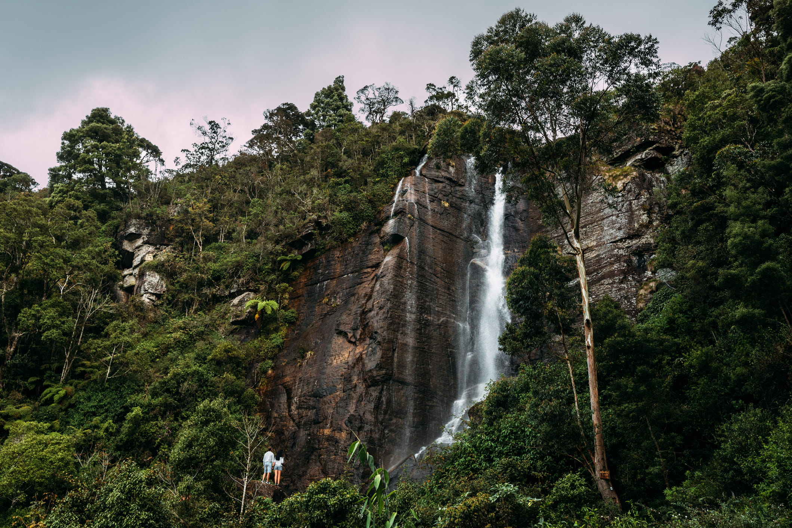
Lover's leap waterfall
Lover's Leap is a slender, beautiful waterfall in Nuwara Eliya, named after a tragic local legend of two lovers who are said to have leaped from its crest.
Seetha Amman Kovil
The Seetha Amman Kovil near Nuwara Eliya is a Hindu temple.
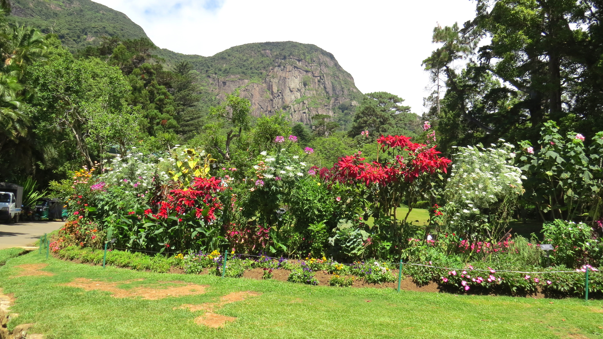
Hakgala Botanical Garden
The Seetha Amman Kovil near Nuwara Eliya is a Hindu temple.The Hakgala Botanical Garden, Sri Lanka's second-largest, is a stunning high-altitude garden near Nuwara Eliya, famed for its cool climate and rich collection of temperate plants like roses and ferns.
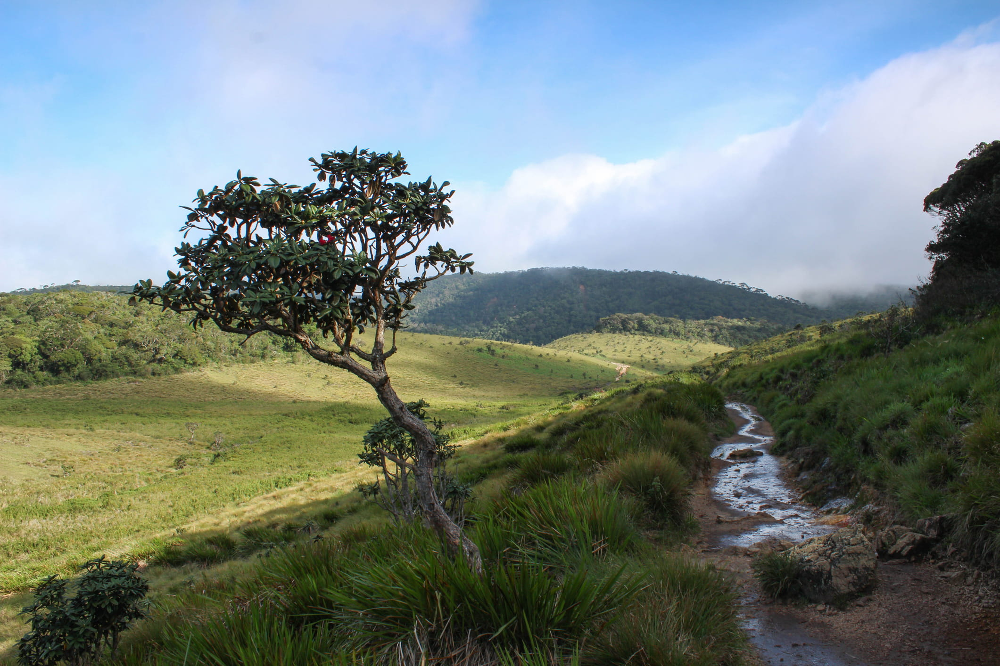
Horton Plains
Horton Plains is a stunning high-altitude national park in Sri Lanka, renowned for its rich biodiversity nestled within its misty, rolling grasslands.
New Zealand Farm - Ambewela
The New Zealand Farm in Ambewela is a famous dairy farm set in a region often called "Little New Zealand" for its scenic, rolling green pastures and cool climate, where visitors can see large herds of Friesian cattle.
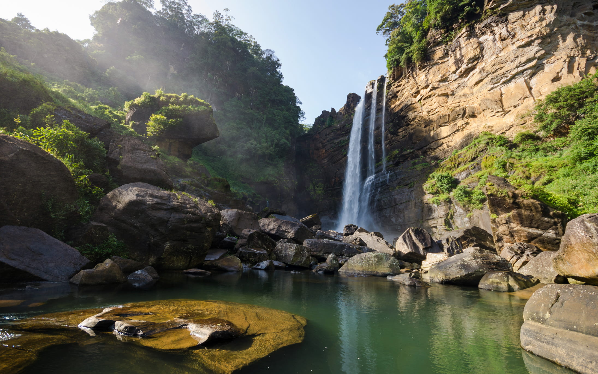
Laxapana Falls
Laxapana Falls is a powerful and historic waterfall in Sri Lanka's hill country, renowned not only for its beauty but also for its crucial role in generating the nation's hydroelectric power.
Inclusions
- Hotel accommodation with Half board basis (B/F & Dinner)
- Rides/ Excursion Fees
- Luxury transport
- Professional tour guide
- Entrance tickets
- Drinking water
- Complementary Souvenir
Exclusions
- Lunch and drinks
- Optional activities and excursions
- Travel insurance
- Personal expenses
Packages and Pricing
- (1) Value package per head cost (adult) all-inclusive with 4-star accommodation: Contact us on WhatsApp number
- (2) Luxury package per head cost (adult) all-inclusive with 5 star accommodation; Contact us on WhatsApp number
- (3) For tailored travel experiences, please complete contact sheet give link